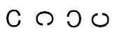
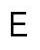
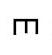
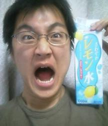
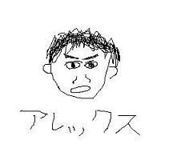
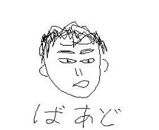
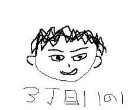

日々、想ふ
〜過去感じたことがつれづれと〜
（できるだけ最大化してお読みください）
日々、想ふ
一日。５/１５
三ツ矢サイダー超うめえ、タケユキです。
昨日の日記どおり昼まで寝ようと思ってたら、
起きたら昼過ぎ１時半。
バイトがあったんで２時に家を出発。
０時に帰宅。
一日が終わる。
なんなんだ俺の一日は・・。
今日のお客さん：
「○○おいしかった〜」って言ってたお客さん、それ冷凍食品だよ？
春眠暁。５/１４
ああ眠かったー、タケユキです。
ってかも今も眠いんだけど。
昨日、おととい、おととといと眠い日が続く。
学校だったらたまに「まあいいやほっとけ」ってな感じで
二度寝とか昼寝できるんだけど
さすがにバイトとかは「眠いんで今日休みー」みたいなことはできません、
お金もらってるんですから。
勝手に休んでみようものなら
「コラー」とか「待て待てー」とか
言われそうです。
そんなこんなで眠い目こすりながらバイトをがんばる。
こうして教習に行き始めたり何かといそがしい一週間だったけど
なんとか終了。
明日もバイトだけど昼からなので昼まで寝ようと思います。
今日のなんなんだろう：帽子を２つかぶってる人を見かけた。
Jupiter。５/１３
エブリデ〜イ〜アイリッスントゥマイハ〜、
一昨日くらいから平原綾香「Jupiter」にはまりました（遅）、タケユキです。
ここ数日かなり忙しい気がする。
教習行きだしたってのが大きい原因の一つだと思うんだけど、
学校の課題やらバイトやらでやることもが多い。
「忙しい＝充実している」とは言い切れんもので。
やることが多くてもやりたい事が少ないってのがそう思う理由かもしれません。
それに天気もよくないし。
まあそうテンション下げててもやらなきゃならんことが減るわけではないし
そういう時音楽を聴いて元気を出します。
って俺はたいてい毎日聴いてるけども。
曲では「Jupiter」にはまってるけど
アーティストではアジカン
（ASIAN KUNG-FU GENERATION）にはまってます。
何が言いたい日記だったのかは自分でも分からんが、
まあとにかく俺、がんばるってことだ。
今日の私信：夏休みはバーベキューやりたいです。
暑は夏い。５/１２
朝青龍３４連勝は歴代５位らしいです、タケユキです。
タイトルにもあるように暑い一日だった。
今日も学校行って教習行っての忙しい一日でした。
朝起きたら９時、１限英語の授業。
久しぶりに遅刻ってものをした。
なんでかわからんけどそれでもめっちゃ眠たかった。
その英語の授業リスニングで先生は日本人のおばちゃんなんだけど
遅れて入ったら俺のほう見て「グッモニーン！」って言ってきた。
眠たくて、でも出席取るから急いできたこの朝に
グッドもくそもあるもんかい。
そんなわけでちょっとイライラしてたから
グッドモーニングって言う振りして
「バッドモーニン！」って言ったやった。
なんでバッドなのかって聞き返してくるかと思ったけど何も言ってこなかった。
どうやらバッドが普通にグッドって聞こえたみたいだ。
やつのリスニング力もたいしたことない。
今日の英語：自分の発音は棚に上げまくり。
ケンカ。５/１１
昨日今日とハードスケジュールです、タケユキです。
高校の時の
友達と微妙なケンカみたいなのをした、
気まずい空気ってのが流れた。
もう当分地元に帰れない。
今日の影響：今日から１週間は帰れないと思う。
誕生会。５/１０
昨日は飲み会でした、タケユキです。
飲み会っていうかサークルでの誕生日会。
俺と、俺と同じ名前を持つ友達の中間の誕生日会、
俗にいう真ん中バースデイ。
こういう飲み会なんかの場では主役はたいてい飲まされる役、
しかも二人とも同じ名前なもんで
片方のタケユキがコールで一気やったら、
「タケユキが飲んで〜タケユキが飲まないわけがない！」
で、がんばって俺が一気やって、そしたらまた
「タケユキが飲んで〜タケユキが飲まないわけがない！」
この無限ループ。
もう何がなんだか分けがわかりませんでした。
今日の一言：ビールはまだ苦い。
視力検査２。５/９
母校のHPに俺登場、
この時の写真です、タケユキです。
昨日の視力検査の話を友達にしたら、
その友達も似たような体験談を話してくれた。
普通視力検査っていったら下の画像みたいな

「C」の向きを答えるものをイメージするんだろうけど、
その友達が大学で受けた視力検査だと
「E」の開いてる向きを答えるっていう視力検査があったらしい。
←こんな感じの（左から順に右、下、左、上って答えるらしい）。
でもその友達は検査を受ける時説明あんまり聞いてなくて
いざ検査を受けた時かなりあせったらしい。
いつもは「C」の文字が「E」になってたら確かにあせる。
あせってたせいでその友達はアルファベットの名前を答えるんだと勘違いして

「う〜ん・・・Eです」
「・・・・・・・M？」
その場の凍りようはそれはそれはすごかったそうな。
今日の突っ込み：えらい形の鋭いMだな〜とは思ったらしい。
視力検査１。５/８
車の教習行き始めました、
学校、バイトの合間に通って夏までには免許が取りたい、タケユキです。
教習所に入所する前に視力検査があります。
あの『C』みたいな文字が上向いたり下向いたりしてるやつ。
普通免許は視力が片目で０.３、両目で０.７が必要。
もちろんコンタクトしてるんで楽勝と思ってたら、
意外に見えにくい、視力が昔よりさらに落ちたみたい。
それでも０.３くらいのは見極められたんだけど、
ちょっと微妙な問題があって、上か左かで悩んだあげく勘で
「上」って答えたら、
検査してたお姉さんが「えっ？」って言った。
間違えたんだと思って「あ、左です」って訂正したら、
「正解です」って次の問題へ。
それからも間違える度に「えっ？」の繰り返し。
結果：視力検査クリア。
今日の検査：検査っていうか誘導尋問。
お菓子。５/７
家のカギ見つかりました、タケユキです。
近所の人からカスタードエッグタルトとやらをもらった。
聞いたところによると手作りらしい。
普通においしかった。
最近料理やってなくて、冷凍食品とかラーメンが多くなってたので
少し焦りを感じた一日だった。
実家からおかんがお米送るついでに冷凍食品を送ってきたおかげで
今うちに冷凍食品がたくさんあるんだけど、
中には普通の冷凍食品以外におかんの作ったハンバーグまでが冷凍されてた。
これがいわゆるおふくろの味ってやつだって思った。
まだハンバーグは食ってないけど。
今日の一言：明日は少し忙しい一日になりそう。
その名も、森本。５/６
家のカギなくしました、タケユキです。
５月になり新生活も一段落してきたところだと思います、
昔
想ひ出の
高校生クイズに出てきた友達、
通称おっさん（当時高３）。
もネット環境も整い、ここを見るようになりました。
そしたら、
「この（↑の）写真はだめ！取り直そうぜ」
とのこと。
それならとさっそく新しい写メを送ってもらいました。
高校のときの人には懐かしい顔、
大学のときの人には誰だこの顔、
都会っ子になってからの一発目の顔はこの顔！
通称おっさん（現在大学１年生）
というわけで今日の更新はここまでにしたいと思います。
今日の突っ込み１：別にどっちも大して変わらん。
今日の突っ込み２：レモン水の意味が分からん。
自分らしく、誇らしく。５/５
連休最終日でした、やっぱり地元帰って
フラワーフェスティバルとか行きたかったなー、タケユキです。
今日は学校の課題を終わらせなくてはいけなくて、
同じ課題を残した学科の友達がうちにきたんだけども、
うちに来てもやることはマンガ読むかゲームするだけ。
結局今日も課題を完成させることはできませんでした。
でも、いっぱいいっぱいで無理した『完成』よりも、
自分らしい『未完成』でいいと思う、僕はそう想う。
今日の一言：要は言い方次第。
戦車。５/４
国民の休日です、タケユキです。
「その前日及び翌日が『国民の祝日』である日は国民の休日となる」そうなので
今日は学校が休みになっています。
そんな日なので勉学に触れず過ごしたかったんですが
この連休中の課題で「戦車を一台作ってくる」とかいう
わけのわからん課題があったので
家でこの課題に挑戦してました。
これがよくわからんのなんのって。
そんなわけで戦車作りは一時間くらいで挫折して
横の本棚に入ってるワンピース読み始めたら、
これがおもろいのなんのって。
１巻から最新刊まで読んでしまった。
ルフィかっけー。
戦車？ちーとも進んでおりません。
今日の後悔：連休最終日も戦車で潰れてしまいそう。
路上。５/３
気付いてくれなくてもいい、
わかってくれなくてもいい、
僕はただ君の傍で咲いていたいだけ、タケユキです。
昨日高校の時の友達が来たって書いたんだけども
晩飯の焼肉の時、なぜか茶碗が割れた。
この高さから落ちて割れるか？ってくらいの高さから落ちて割れた。
そんなわけで昼から梅田に食器買いに行った。
土日なんかの休日は阪急と阪神をつなぐ歩道橋の上で路上してる人がけっこういる。
イラスト付きポストカードだったり帽子だったりアクセだったり、
路上ライブやってる人もいる。
昨日梅田に行った時にちょっと気に入ってポストカードを買ったんだけど
今日もその人いるかな〜って少し期待しながら行ったら、いた。
絵の感じも好きなんだけど一枚一枚に書かれたメッセージが心を打った。
その買ったポストカードのうちの一枚にあったメッセージが
冒頭の文章。
その人も俺のことを覚えてくれてて、
「昨日も来てくれましたよね？」とかってちょっと話をした。
こういう文章書けるっていいな〜って思いながら
満たされた気分で歩き出したら隣にいたアレックスが、
「おまえが買ったやつ（のポストカードの文章）、全部片思い系じゃん」
今日のメッセージ：実らぬ恋の何が悪い。
友達紹介。５/２
連休二日目です、タケユキです。
今日は高校時代の友達がうちに来た。
一人は電車で、もう一人はチャリで。
今までこの日記でアレックスとばあどで登場してきた二人だ。
春休みとか帰省した時に何人かに「○○ってだれよ？」ってよく言われるんで
登場人物を何人かちょっと詳しく紹介しようかと思います。
アレックス：大阪南部に住む大学生。実家で飼っている犬の名前がアレックス、
よくハーフに間違えられる、あと屁がくさい。
ばあど：京都銀閣寺近くに住む。熱帯魚大好きで有名、生き物に強い、
交通手段は数十キロならもっぱらチャリ。
３丁目１１の１：広島西条の一戸建てに一人で住み、自分の車を持つ。
身長160cmくらい、もしかしたら160ないかも。
あとトイレに行く時聞いてもないのに「おしっこ！」って言う。
それとウイニングイレブンが無駄に強い。
あと高３の時は週３くらいの割合で泊まってたりした。
あの時はお世話になりましたありがとう。
こんな感じなんだけども文字だけではまだ分かりにくいだろうから
マウス使って似顔絵書いてみました。

この画像の著作権は当HP管理人に属しており、
無断で転載・複製は固くお断りしております。
なお、今日の日記に関する苦情はお断りしております。
今日の美術：高校時代美術の成績学年で後ろから２番。
連休。５/１
また四季のチケット買いました、タケユキです。
この連休は帰省しようかとも思ったんだけど
金がなくなったので８割方断念、
こっちで過ごします。
今日は友達のところで晩ご飯をごちそうになり
微妙に睡魔がつきまとっているのでおやすみなさい。
今日のドラマ：冬のソナタはおもしろいらしい。